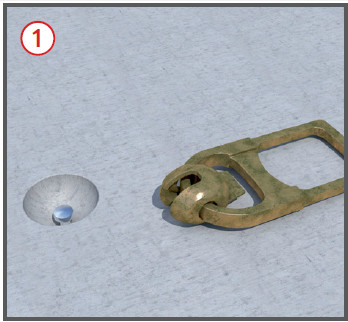
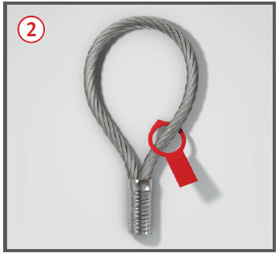
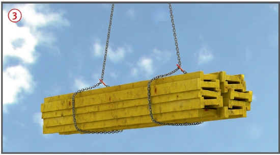
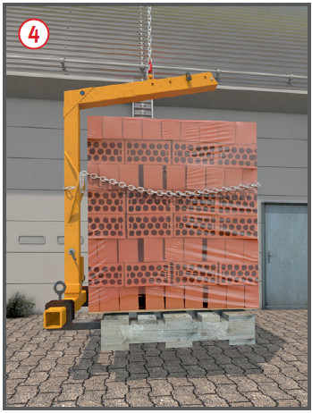
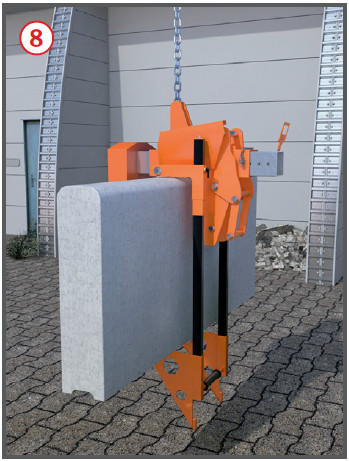
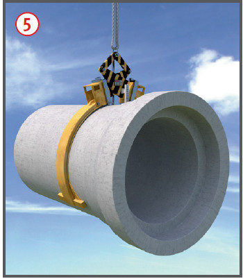
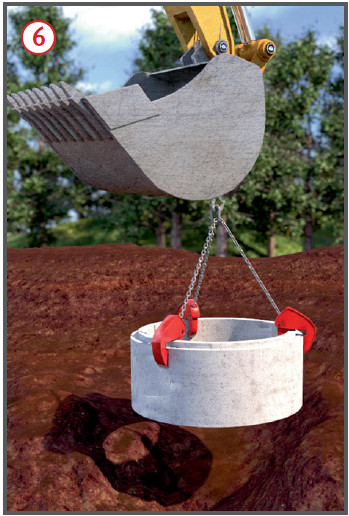
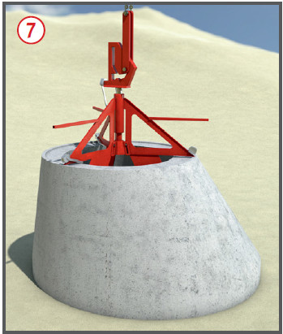

Gefährdungen
- Beim Transport von Lasten
können diese aus dem Lastaufnahmemittel
herausfallen, sich
vom Lastaufnahmemittel lösen
und Personen treffen.

Allgemeines
- Vorrangig nur formschlüssige
Lastaufnahmemittel, z. B. Steingabeln
 , Transportanker
, Transportanker  und
Transportankersysteme
und
Transportankersysteme  , einsetzen.
, einsetzen.
- Lastaufnahmemittel müssen
mit den für den Betrieb wichtigen
Angaben gekennzeichnet sein,
z. B. Eigengewicht und Tragfähigkeit.
Sie dürfen nicht überlastet
werden.
- Betriebsanleitung beachten.
- Tragfähigkeit überprüfen.
- Verbindungsmittel (z. B.
Schäkel, Steck- und Schraubbolzen) sind gegen unbeabsichtigtes
Lösen und Herabfallen zu
sichern.
- Lastaufnahmemittel bestimmungsgemäß
verwenden und
lagern.
- Benutzung einstellen, sobald
die Witterungsbedingungen
die Funktionssicherheit beeinträchtigen.
- Lasten im Schwerpunkt anschlagen.
- Kraftschlüssig wirkende Lastaufnahmemittel nicht über Personen schwenken.
- Das Befördern von Personen
mit Lastaufnahmemitteln ist verboten.
Schutzmaßnahmen
- Formschlüssig wirkende Lastaufnahmemittel verwenden.
- Einbau und Verwendungsanleitung des Herstellers beachten und am Einsatzort bereithalten.
Beispiele für formschlüssig
wirkende Lastaufnahmemittel
Kugelkopfankersysteme
- Bei Transportankersystemen
nur zusammengehörige Transportanker
und Lastaufnahmemittel
(Abheber) verwenden.
Einschraubankersysteme
- Anker nicht über 45 Grad abknicken,
komplett eindrehen.
- Seilschlaufen nicht knicken
und quetschen.
Traversen
- Schiefstellung der Traverse vermeiden.
- Langgliedrige Lasten im
Schnürgang anschlagen
 .
.
- Befestigung der Anschlagseile,
-ketten oder -bänder an der Traverse nur
- mit genormter Seilendverbindung
und Schäkel oder
- in Lasthaken mit Hakensicherung.
Steingabeln
- Gabeln mit Schwerpunktausgleich
benutzen. Aufhängepunkt
so wählen, dass sich die Gabeln
mit der Last nicht nach vorn
neigen.
- Folienverpackte Steinpakete
auf Paletten mit Ketten, Bändern
oder Bügeln gegen Herabrutschen
von der Gabel sichern.
Die Schrumpffolie muss die
Palette mit umfassen und darf
nicht beschädigt sein. Paletten
müssen tragfähig sein.
Mörtelcontainer
- Mörtelcontainer mit mindestens 2 Anschlagmitteln anschlagen.
Ausnahme: Die Container sind mit Bügeln für ein Anschlagmittel ausgerüstet.
- Mörtelcontainer aus Kunststoff
regelmäßig auf augenscheinliche
Beschädigungen (Risse) prüfen.
- Fest angebrachte Ketten und
Seile von Mörtelresten reinigen.

Klemme mit zusätzlicher
Halteeinrichtung
- Zum Versetzten großformatiger
Steine (KS, Porenbeton) Klemme
mit zusätzlicher Halteeinrichtung
 verwenden.
verwenden.
Steingreifer
- Vor dem Steintransport Auffangplane
einhängen.
- Beschädigte Auffangplane
unverzüglich auswechseln.
- Bei paketierten Steinen immer
unterste Schicht greifen.
Beispiele für kraftschlüssig
wirkende Lastaufnahmemittel
- kein Aufenthalt von Personen
unter kraftschlüssig wirkenden
Lastaufnahmemitteln.

Rohrgreifer (Rohrzangen) 
- Rohrgreifer dürfen sich bei
Entlastung nicht selbsttätig vom
Rohr lösen.
Ausnahme: Rohrgreifer mit
Schrittschaltwerk.
- Als zusätzliche Kennzeichnung
muss der zulässige Greifbereich angegeben sein.
- Hydraulisch oder pneumatisch
schließende Rohrgreifer benötigen
Einrichtungen zum Ausgleich
von Druckverlusten mit selbsttätig wirkender Warneinrichtung
für den Geräteführer.
Versetzgeräte für Schachtfertigteile
- Betonfertigteile müssen zur
Aufnahme der Druckkräfte vollständig
ausgehärtet sein.

Schachtringklemmen
- Für den Transport Klemmen
 verwenden, die sich bei Entlastung
nicht selbsttätig öffnen.
verwenden, die sich bei Entlastung
nicht selbsttätig öffnen.
- Klemmen exakt auf Schachtringdicke
einstellen.
- Schachtkonen (symmetrische
und asymmetrische) nach Bedienungsanleitung der Hersteller
anschlagen.

Sonderbauformen
- Bei Sonderbauformen
 von
Lastaufnahmemitteln für Betonfertigteile
Bedienungsanleitung
der Hersteller beachten.
von
Lastaufnahmemitteln für Betonfertigteile
Bedienungsanleitung
der Hersteller beachten.
Prüfungen
- Art, Umfang und Fristen erforderlicher
Prüfungen festlegen
(Gefährdungsbeurteilung) und
einhalten, z. B.:
- vor Beginn jeder Arbeitsschicht
auf augenfällige
Mängel durch den Bediener,
- vor der ersten Inbetriebnahme
und nach Bedarf, mind. 1 x
jährlich durch eine „zur
Prüfung befähigte Person“.
- Ergebnisse dokumentieren.
07/2021